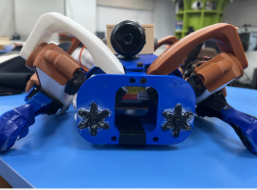

I'm driven by a desire to create meaningful and practical solutions that
improve everyday life. Whether it's designing a robot dog or developing
AI companions, my goal is to blend technology with real human needs. I
believe innovation should be accessible and impactful, especially in
areas like healthcare, security, and companionship. This journey is
about more than just building cool gadgets—it's about solving problems,
learning continuously, and making a positive difference. Every project
challenges me to grow and think creatively, fueling my passion to push
boundaries and contribute something valuable to society.
The dog I made!

My goal
My goal is to create technology that serves a real purpose—solutions
that aren't just innovative, but truly meaningful. I want to design
intelligent systems that address everyday challenges, especially in
areas like elder care, healthcare, and emotional well-being. Whether
it's building a robot dog for security or an AI companion for the
elderly, I'm driven by the idea of making tech accessible and impactful.
I hope to bridge the gap between complex engineering and human needs,
developing tools that are affordable, useful, and transformative for
people who need them most—especially in underserved or overlooked
communities.
Why am I doing this
India is witnessing a significant rise in its elderly population,
bringing with it a host of challenges such as loneliness, mental health
issues, and inadequate support systems. Many senior citizens,
particularly those living in rural areas and old age homes, often
experience emotional distress, isolation, and a lack of regular
companionship. With limited access to mental health resources and family
support, their well-being is increasingly at risk. AI-driven
conversational agents present a promising solution by offering
consistent, empathetic interaction. These virtual companions can help
alleviate feelings of loneliness, provide mental stimulation, and serve
as a supportive presence in their daily lives.